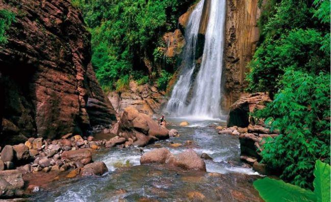
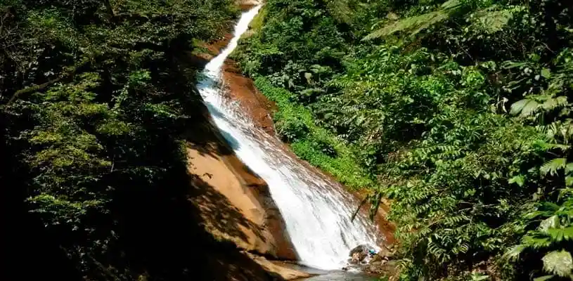
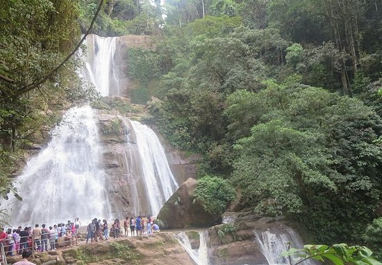

Catarata Velo de la Novia: Un espectáculo natural en Oxapampa
La Catarata Velo de la Novia es una impresionante caída de agua ubicada en la provincia de Oxapampa. Rodeada de exuberante vegetación, es un destino ideal para los amantes de la naturaleza y la aventura.
Características
La catarata tiene aproximadamente 30 metros de altura y forma una piscina natural en su base. Su nombre proviene del efecto visual del agua cayendo, que asemeja un velo blanco y delicado.



Horarios y Ubicación
- Ubicación: Catarata Velo de la Novia, provincia de Oxapampa, región Pasco, Perú.
- Horario de visita: Todos los días de 8:00 a.m. a 5:00 p.m.
- Costo de entrada: Tarifa de ingreso simbólica para el mantenimiento del área.
Consejos para Visitantes
- Lleva ropa cómoda: Se recomienda ropa ligera y calzado adecuado para caminatas.
- No olvides tu cámara: La belleza del lugar es ideal para fotografías espectaculares.
- Respeta el medio ambiente: No dejes basura y sigue los senderos señalizados.
- Visita en temporada seca: Para un acceso más seguro y disfrutar mejor del entorno.
- Disfruta de un baño refrescante: Si el clima lo permite, puedes sumergirte en sus aguas cristalinas.